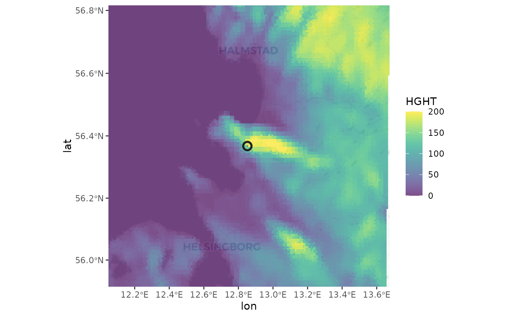

This function adds data from a georeferenced raster file (either in terra::spatraster
or raster::RasterLayer format) to a single scan or to all scans in a pvol object.
This is specifically useful for adding digital elevation information to these objects
when creating vertical profiles relative to ground level, which requires information for
each range gate on the topographic ground level height.
Usage
add_param(x, raster, param)
# S3 method for class 'scan'
add_param(x, raster, param)
# S3 method for class 'pvol'
add_param(x, raster, param)Arguments
- x
A
pvolorscanobject.- raster
An object of class
terra::SpatRasterorraster::RasterLayer.- param
The name of the added parameter.
Examples
# locate example volume file:
pvolfile <- system.file("extdata", "volume.h5", package = "bioRad")
# load the file:
example_pvol <- read_pvolfile(pvolfile)
# the following code block downloads digital elevation data from the internet
# \donttest{
if(requireNamespace("elevatr", quietly = TRUE)){
# download digital elevation information:
example_pvol |>
# extract lowest scan
get_scan(.5) |>
# convert to raster object
scan_to_raster(param="DBZH") |>
# convert to terra raster class
terra::rast() |>
# download digital elevation data (increase z for higher resolutions)
elevatr::get_elev_raster(z = 5, clip = "bbox") -> data_dem
# set digital elevations for open water to mean sea level (0)
data_dem[data_dem<0]=0
# set an informative name for the DEM information
names(data_dem) <- "HGHT"
# add the DEM information as a scan parameter to the polar volume:
example_pvol <- add_param(example_pvol, data_dem, "HGHT")
# verify that HGHT parameter has been added:
get_scan(example_pvol,.5)
# plot the digital elevation paired with the lowest scan:
example_pvol |>
get_scan(.5) |>
project_as_ppi() |>
map(param="HGHT", zlim=c(0,200), palette = viridis::viridis(100))
}
#> Mosaicing & Projecting
#> Clipping DEM to bbox
#> Note: Elevation units are in meters.
#> Zoom: 8
#> Fetching 4 missing tiles
#>
|
| | 0%
|
|================== | 25%
|
|=================================== | 50%
|
|==================================================== | 75%
|
|======================================================================| 100%
#> ...complete!

# }